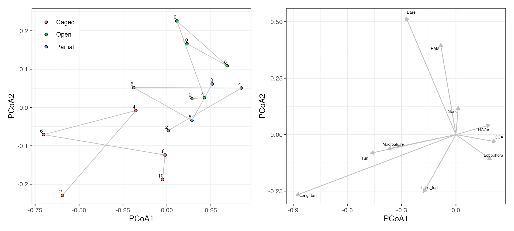

3. Random effects and ecological sampling designs
Source:vignettes/random-effects.Rmd
random-effects.RmdRandom effects describe ecological replication:
(1 | site) says that observations from the same site share
a site-level community component. Nested, blocked, and random-slope
terms extend that idea to more structured sampling.
-
(1 | site)— repeated observations within sites; treatments assigned among sites are tested with sites as the independent units. -
(1 | region/site)— sites nested within regions; each predictor is tested at the hierarchy level where it varies. -
(1 | block) + (1 | treatment:block)— a treatment randomized within blocks; the declared treatment-by-block variation supplies the treatment denominator. -
(1 | region/site) + (1 | treatment:region) + (1 | treatment:region:site)— treatment crossed with a nested region/site hierarchy. -
(1 + condition | subject)or(1 + x | group)— correlated random intercepts and slopes for complete repeated units.
distmer deliberately borrows lmer formula
notation because it is a familiar and concise way to state this
hierarchy. distmerapplies the declared fixed and random
subspaces to a Gower-centred dissimilarity matrix and obtains inference
from design-appropriate denominators and restricted permutations.
Simple random effects:
Herbivory on coral reefs has a strong impact on macrobenthic community succession. This can be demonstrated by using tiles placed in herbivore exclusion cages, typically “open”, “partial” and “caged” treatments (see Evensen et al 2021 for details).
Below is changes in community succession through time using the open surfaces of tiles (“crowns”) across different caging treatments:
library(tidyverse)
library(distmer)
library(patchwork)
library(ggrepel)
coralsuccession <- read.csv("~/distmer/code/Macro_communities.csv") |>
filter(Nutrients == "Normal") |>
filter(Microhabitat == "Crown")
env <- coralsuccession[,1:5]
coral <- coralsuccession[,6:17]
coral_bray <- vegdist(decostand(coral, method = "hellinger"), method = "bray")
coral_pcoa <- cmdscale(coral_bray, k = 2, eig = TRUE, add = TRUE)
coral_pcoa_scores <- as.data.frame(coral_pcoa$points) |>
setNames(c("PCoA1", "PCoA2")) |>
bind_cols(env) |>
group_by(Caging, Timepoint) |>
summarise(PCoA1=mean(PCoA1), PCoA2=mean(PCoA2))
coral_scores <- wascores(coral_pcoa$points, coral) |>
as.data.frame() |>
rownames_to_column() |>
setNames(c("Taxa", "PCoA1", "PCoA2"))
a <- ggplot() + theme_bw() +
geom_point(data = coral_pcoa_scores, aes(PCoA1, PCoA2, fill=Caging), shape=21) +
geom_text(data = coral_pcoa_scores, aes(PCoA1-0.01, PCoA2+0.01, label=Timepoint/7), size=2.5) +
geom_path(data = coral_pcoa_scores, aes(PCoA1, PCoA2, group=Caging),
colour = "grey70", linewidth = 0.4, alpha = 0.85) +
theme(legend.position = c(0.02, 0.98),
legend.justification = c(0, 1),
legend.key = element_blank()) +
guides(fill = guide_legend(title = NULL))
b <- ggplot() + theme_bw() +
geom_segment(data = coral_scores, aes(x = 0, y = 0, xend = PCoA1, yend = PCoA2),
arrow = arrow( length = unit(0.18, "cm"), type = "closed"),
colour = "grey75", linewidth = 0.5, inherit.aes = FALSE) +
geom_text_repel(data = coral_scores, aes(x = PCoA1, y = PCoA2, label=Taxa), size=2)
a|b
There are 5 Timepoints, and 18 tiles in total (n=6 per treatment).
The correct structure to explore the effect of caging over time is
Caging * Timepoint + (1 | Tile), where Timepoint as a fixed
within-tile factor whose effect (and its interaction with Caging) we
want to test, while Tile is a random intercept absorbing tile-to-tile
variation.
Using distmer with tile as a random effect, both
Timepoint and Caging treatment have a
significant effect on benthic community structure:
fm1 <- permanova(coral_bray ~ Caging + Timepoint + (1 | Tile), env, type="III", permutations=9999, seed=101)
fm1$table |> tab()| Source | df | SS | MS | Pseudo-F | P(perm) | P(MC) | Unique perms |
|---|---|---|---|---|---|---|---|
| Caging | 2 | 1.871 | 0.935 | 4.894 | 0.005 | 0.006 | 9999 |
| Timepoint | 1 | 0.450 | 0.450 | 5.907 | 0.004 | 0.005 | 9999 |
| Tile (between-group stratum) | 15 | 2.867 | 0.191 | NA | NA | NA | NA |
| Residual | 71 | 5.412 | 0.076 | NA | NA | NA | NA |
| Total | 89 | 10.601 | NA | NA | NA | NA | NA |
With (1|Tile) as a random effect, pseudo-F (4.89) is (correctly)
tested against MS 0.191 (tile-level), not against MS 0.076 (residual) as
under adonis2(). Testing it against the residual would have
inflated the apparent significance, so the correct stratification
(1|tile) is more conservative.
Exploring the pairwise contrasts, the Caging treatment
operates exactly as expected: Open and Partial treatments show no
difference, while Caged treatments differ from both Open and
Partial:
permanova_contrasts(fm1, type = "pairwise", factor="Caging") |> tab()| contrast | pseudo_F | df_num | df_den | denominator | p_perm | unique_perms | estimable | p_adj |
|---|---|---|---|---|---|---|---|---|
| Caged - Open | 6.388 | 1 | 10 | MS[between-group stratum] | 0.008 | 9999 | TRUE | 0.024 |
| Caged - Partial | 5.045 | 1 | 10 | MS[between-group stratum] | 0.018 | 9999 | TRUE | 0.035 |
| Open - Partial | 0.510 | 1 | 10 | MS[between-group stratum] | 0.629 | 9999 | TRUE | 0.629 |
Random slopes:
For a more complex example:
The vegan::pyrifos data contain aquatic-invertebrate
communities from 12 ditches sampled repeatedly before and after
insecticide application. Dose was assigned to ditches, so ditch is the
experimental unit. We use four balanced post-treatment dates per ditch,
where each trajectory is an individual ditch according to dose:
data(pyrifos, package = "vegan")
ditch <- gl(12, 1, length = nrow(pyrifos))
week <- rep(c(-4, -1, 0.1, 1, 2, 4, 8, 12, 15, 19, 24), each = 12)
dose_by_ditch <- c(0.1, 0, 0, 0.9, 0, 44, 6, 0.1, 44, 0.9, 0, 6)
dose <- factor(rep(dose_by_ditch, 11))
keep <- week %in% c(1, 2, 4, 8)
community <- pyrifos[keep, ]
pyrifos_env <- data.frame(
ditch = droplevels(ditch[keep]),
dose = droplevels(dose[keep]),
week = week[keep]
)
pyrifos_bray <- vegdist(community, method = "bray")
ditch_ord <- cmdscale(pyrifos_bray, k = 2)
ditch_ord <- cbind(
pyrifos_env,
data.frame(Axis1 = ditch_ord[, 1], Axis2 = ditch_ord[, 2])
)
ggplot() +
geom_path(data = ditch_ord, aes(Axis1, Axis2, group = ditch, colour = dose, order = week), alpha = 0.65, linewidth = 0.6) +
geom_point(data = ditch_ord, aes(Axis1, Axis2, group = ditch, fill = dose, order = week), shape=21, alpha = 0.85) +
coord_fixed() +
theme_bw() +
scale_fill_brewer(palette="Set1") +
scale_color_brewer(palette="Set1") +
scale_size_continuous(range = c(1.8, 4), breaks = c(1, 4, 8)) +
labs(x = "PCoA axis 1", y = "PCoA axis 2", colour = "Dose",
size = "Week")
#> Warning in geom_path(data = ditch_ord, aes(Axis1, Axis2, group = ditch, :
#> Ignoring unknown aesthetics: order
#> Warning in geom_point(data = ditch_ord, aes(Axis1, Axis2, group = ditch, :
#> Ignoring unknown aesthetics: order
#> Ignoring unknown labels:
#> • size : "Week"
For a balanced two-condition comparison, an early (1-2 weeks) and late (>3 week) period is defined for each ditch (balanced with two observations in each ditch-period cell).
Visualising the mean PCoA axis 1 within ditch and period indicates ditches need not share the same early-to-late change:
period_env <- transform(
pyrifos_env,
period = factor(
ifelse(week %in% c(1, 2), "early", "late"),
levels = c("early", "late")
)
)
period_ord <- transform(ditch_ord, period = period_env$period)
period_centres <- aggregate(
cbind(Axis1, Axis2) ~ ditch + period,
data = period_ord, FUN = mean
)
ggplot() +
geom_line(data = period_centres, aes(period, Axis1, group = ditch), colour = "grey65", linewidth = 0.7) +
geom_point(data = period_centres, aes(period, Axis1, group = ditch, fill = ditch), shape=21, size = 2.4, show.legend = FALSE) +
theme_bw() +
scale_fill_brewer(palette="Set1") +
scale_color_brewer(palette="Set1") +
labs(x = "Period", y = "Mean PCoA axis 1 within ditch and period")
#> Warning in RColorBrewer::brewer.pal(n, pal): n too large, allowed maximum for palette Set1 is 9
#> Returning the palette you asked for with that many colors
Using a random intercept allows ditches to have different average communities, while a random slope allows their within-ditch changes to differ.
period_fit <- permanova(
pyrifos_bray ~ period + (1 + period | ditch),
period_env, permutations = "all", seed = 26
)
summary(period_fit) |> tab()
#> Distance-based PERMANOVA
#> Engine: random slope
#>
#> Factors
#> Name Type Levels
#> period Fixed 2
#> 1+period|ditch Random, slope 12
#>
#> PERMANOVA table of results
#> Source df SS MS Pseudo-F P(perm) Unique perms
#> period 1 0.424 0.424 6.7905 0.0005 4096
#> Between-subject random slope 11 0.687 0.062
#>
#> Denominators
#> Source Denominator
#> period MS[between-subject random-slope differences]
#>
#> Estimates of components of variation
#> random_intercept random_slope
#> random_intercept 0.05305 0.00388
#> random_slope 0.00388 0.01552| Source | df | SS | MS | Pseudo-F | P(perm) | P(MC) | Unique perms |
|---|---|---|---|---|---|---|---|
| period | 1 | 0.424 | 0.424 | 6.791 | 0 | NA | 4096 |
| Between-subject random slope | 11 | 0.687 | 0.062 | NA | NA | NA | NA |
A numeric gradient can also vary by unit. With four post-treatment
weeks, (1 + week | ditch) estimates one within-ditch
community slope and tests the equally weighted average slope against the
variation among ditch slopes.
continuous_fit <- permanova(
pyrifos_bray ~ week + (1 + week | ditch),
pyrifos_env, permutations = 999, seed = 26
)
summary(continuous_fit) |> tab()
#> Distance-based PERMANOVA
#> Engine: continuous random slope
#>
#> Factors
#> Name Type Levels
#> week Fixed NA
#> 1+week|ditch Random, slope 12
#>
#> PERMANOVA table of results
#> Source df SS MS Pseudo-F P(perm) Unique perms
#> week 1 0.016 0.016 6.8424 0.0010 999
#> Between-group random slope 11 0.025 0.002
#> Residual 24 1.067 0.044
#>
#> Denominators
#> Source Denominator
#> week MS[between-group random slopes]
#>
#> Estimates of components of variation
#> Source Estimate Sq.root
#> slope 0.0007352657 0.02711578
#> residual 0.0444687561 0.21087616| Source | df | SS | MS | Pseudo-F | P(perm) | P(MC) | Unique perms |
|---|---|---|---|---|---|---|---|
| week | 1 | 0.016 | 0.016 | 6.842 | 0.001 | NA | 999 |
| Between-group random slope | 11 | 0.025 | 0.002 | NA | NA | NA | NA |
| Residual | 24 | 1.067 | 0.044 | NA | NA | NA | NA |
Only random effects
At current distmer does not run pure random effects
models and instead throws an error:
period_fit <- permanova(pyrifos_bray ~ (1 + period), period_env)Implementation
For exact detail, permanova() performs the following sequence:
- It validates the dissimilarity and computes
G = -0.5 J D^2 J. The same centring applies to every distance matrix; Euclidean distances give a positive semi-definiteG, while signed axes from non-Euclidean distances remain in the analysis. - It converts fixed terms into estimable model subspaces and records whether each random term is a main grouping factor, a nesting declaration, an explicit interaction, or a random slope.
- It checks balance, containment, crossing, cell completeness, confounding, and the level at which each predictor varies.
- For supported balanced designs it derives the exact expected-mean-square (EMS) denominator. For supported unbalanced designs it works with equally weighted unit centroids or profiles and never invents an unbalanced EMS.
- It constructs the permitted residual rearrangements, intact-unit permutations, or whole-unit sign flips, then reports the estimand, denominator, exchangeable unit, attainable permutations, and assumptions.
If no validated method matches the declared design, the model stops. A formula that parses is not automatically a defensible permutation design.
Most users only need permanova(). The functions below
are useful for inspecting, validating, extending a particular design, or
understanding how distmer works:
| Formula pattern | Specialised implementation | Denominator or permutation |
|---|---|---|
| d ~ a | permanova_unbalanced(); permanova_oneway() is the direct one-factor reference | Within-group residual; unrestricted observations |
| d ~ a + b (unbalanced, type = ) | permanova_unbalanced() | Full-model residual; term-specific Freedman-Lane |
| d ~ a + (1 | site) | permanova_mixed() | Exact whole-plot EMS |
| d ~ a + x + (1 | site) | permanova_mixed_covariate() | Split-plot or randomized-block covariate strata |
| d ~ a + (1 | region/site) | permanova_nested() | Level-specific EMS; descendants move intact |
| d ~ a + x + (1 | region/site) | permanova_nested_covariate() | Covariate-adjusted nested strata |
| d ~ a + (1 | block) + (1 | a:block) | permanova_crossed() | Exact a:block EMS; intact cells within block |
| d ~ a + (1 | region/site) + (1 | a:region) + … | permanova_hybrid() | Exact a:region EMS; intact treatment profiles |
| d ~ x + (1 + x | group) | permanova_random_slope_continuous() | Between-group slope; whole-group sign flips |
| unbalanced random / nested / block | permanova_unequal_random_intercept() / permanova_unbalanced_*() | Unit-centroid inference; size- or topology-restricted permutations |
permanova_capabilities() returns the complete
machine-readable support table, including estimands, error-control
claims, and explicit exclusions.